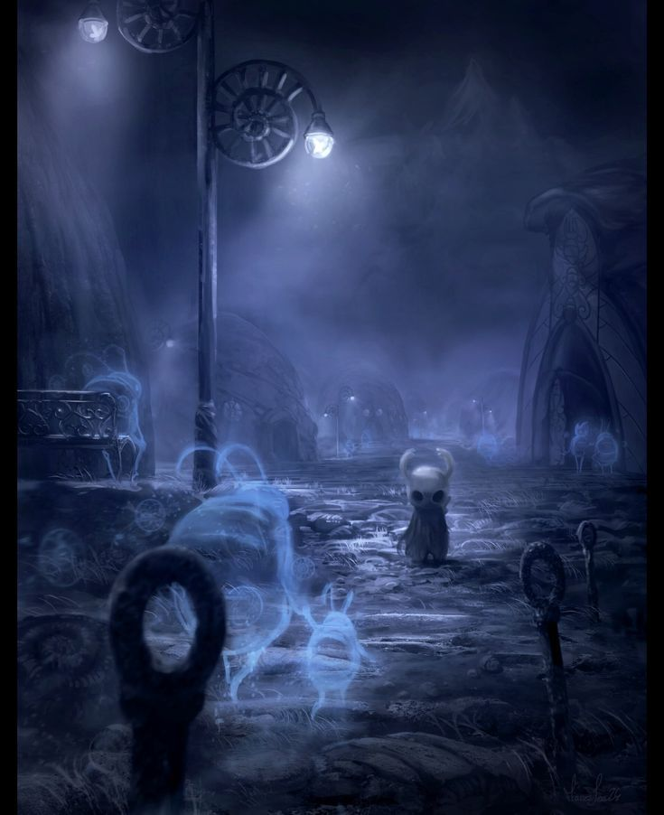
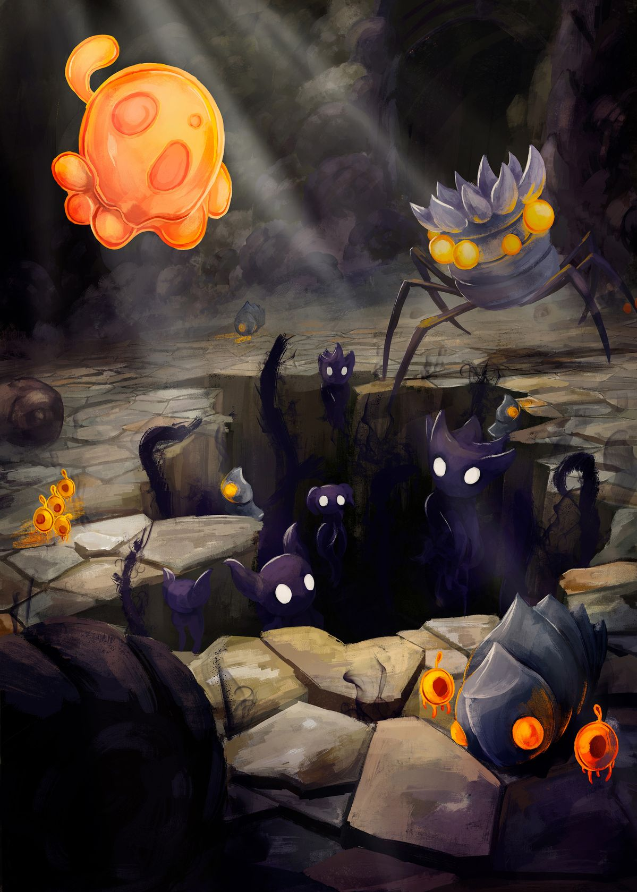

El pueblo de Bocasucia
aquí es donde llegamos justo después de salir del Paso del rey, es una de las zonas más importantes del juego por sus comerciantes y posición en el mapa
aquí realmente no hay peligros, es la introducción a la mecánica de las bancas y una zona de comercio

Cruces Olvidados
aquí es donde el viaje comienza, una vez pasado el Paso del rey y Bocasucia, es el comienzo de las raíces del reino de Hallownest
pero que no los deje engañar su simpleza, puede ser mortal para aquellos exploradores inexpertos y poco precavidos
Habitado por criaturas débiles, pero aún así no te puedes confiar

Sendero Verde
los primeros paisajes verdes a los que se llega, esta zona muestra vegetación y mucha vida, pero el peligro acecha en cada arbusto
por más bello que se vea, este lugar está lleno de criaturas peligrosas y su ácido es letal al caer en él

Cañón nublado
esta zona es una de las más peculiares, pues los únicos enemigos que encontrarás aquí son 2 tipos de medusas, una chiquita y una grande,
aunque hay que tener cuidado ya que un mal paso o un golpe mal dado podría causar tu muerte
su amplio paisaje contiene mucho que explorar a lo largo del juego y a medida que consigues habilidades que permitan más exploración

Páramos fúngicos
aquí los hongos se expanden tanto como la infección, en esta zona podrás encontrar la aldea mantis que es necesaria para el juego y descubrir las cosas que tiene por ofrecer este lugar
pero hay que andar con cuidado, los hongos y el ácido están por todos lados y acabarán contigo si no eres precavido

Cumbres de cristal
cavernas relucientes y oscuras, llenas de cristales y enemigos cristalizados e infectados.
Esta zona es muy peligrosa al comienzo pues tiene enemigos bastante difíciles de explorar y zonas difíciles de superar sin experiencia
un lugar donde el peligro espera a la vuelta de la esquina, pero la recompensa vale cualquier prueba que haya aquí

Ciudad de Lágrimas
una de las zonas más importantes del juego, esta es la ciudad capital del reino de Hallownest, lo que alguna vez fue la joya de un reino prodigioso,
ahora es lo que queda del llanto de sus habitantes
esta zona es crucial para el juego pues conecta con otras zonas importantes, se te da información sobre el lore y se consiguen cosas muy importantes

Acantilados Aulladores
Una zona alta y ventosa donde el sonido del viento parece mezclarse con antiguos lamentos, tan misteriosa como todo el reino y la muestra de su grandeza corrompida
aquí se es consciente de la gigantesca realidad del reino, no es solo una cueva bajo tierra sino toda una hiper civilización reducida a la ruina

Canales Reales
Un sistema de drenaje olvidado bajo la Ciudad de Lágrimas. Lleno de parásitos y monstruos esperando alimentarse
Oscuro, húmedo y peligroso, lleno de criaturas corrompidas y asquerosas, pero hogar de uno de los 5 grandes... o al menos la sombra de lo que alguna vez fue

Límite del Reino
el último aliento de vida del reino, congelado y deformado por el paso del tiempo y la infección
Restos de un intento de civilización, no es más que la muestra de la caída del reino y su total destrucción

Coliseo de los Insensatos
Un lugar de combate donde los guerreros luchan por gloria… o por supervivencia.
Las pruebas aquí son brutales y sin piedad. Pero sus recompensas son muy buenas y son necesarias para completar todo el juego

Cuenca Antigua
Ruinas profundas donde el tiempo ha destruido todo rastro de civilización. Lo más profundo a lo que el reino se pudo empezar a expandir
Un lugar silencioso… quieto, pero los peligros esperan en las sombras y los secretos del reino están ahí para ser explorados

Jardines de la Reina
Un área verde y arreglada, hecha en honor a la Dama Blanca. Zona que la vegetación e infección han causado desorden y caos
Esconde secretos ligados a la historia del reino y es hogar de las mantis traidoras y su líder: el Señor Desleal

La Colmena
Un territorio lleno de abejas guerreras. Una civilización que intentó ser independiente y resistir a Radiance, sin mucho éxito
Aunque parece ordenado, es extremadamente peligroso. Sin su reina y sumido en la infección, es la prueba del poder de Radiance y la capacidad destructiva de su infección

Nido Profundo
Un laberinto oscuro donde los sonidos son más importantes que la vista. Sin linterna se vuelve un sufrimiento horrible y sus criaturas se tornan perturbadoras
Un lugar lamentablemente necesario para la historia pues es muy fácil perderse y morir por su zona altamente letal y sus enemigos aterradores

Palacio Blanco
Es una zona onírica, fue del plano físico que representa el poder y presencia del Rey Pálido
Es la memoria viva de la era dorada, donde los sirvientes aguardan al regreso de su monarca

Sendero del Dolor
Las memorias del Rey Pálido enterradas bajo la zona de plataformeo más difícil y desafiante del juego
Es una prueba de precisión extrema y paciencia absoluta, donde hasta el más mínimo error te hará comenzar de nuevo

Tierras de Reposo
Un lugar sagrado donde descansan las almas del reino. Donde la última polilla nos guía por el mundo onírico y donde comienza nuestra verdadera misión
Es uno de los sitios más tranquilos… pero también más tristes.

El Abismo
Lo más profundo del reino, donde yacen las almas de los intentos fallidos del Rey Pálido, donde el vacío se materializa en forma de sufrimiento
Es un sitio bastante peligroso pero muy útil y necesario para progresar
